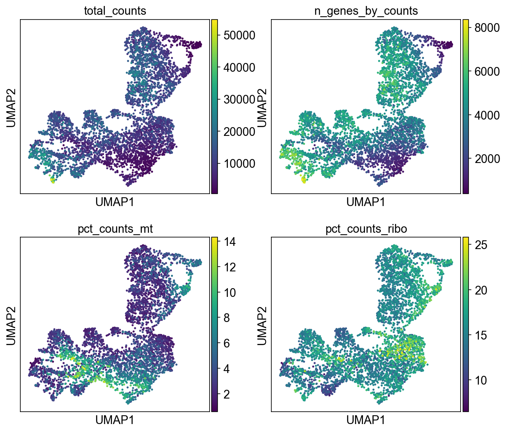

NB02 · Quality Control & Preprocessing
From Raw Counts to
Analysis-Ready Data
Six sequential preprocessing steps applied in the correct biological order — each with a specific statistical justification. Raw counts preserved in adata.layers['counts'] and adata.raw for all downstream scoring.
1
Quality Filtering
Four filters applied: minimum 200 genes/spot (removes empty or dying spots), minimum 500 UMI/spot (ensures reliable quantification), maximum 15% MT% (excludes lysed cells releasing mitochondrial RNA), and genes detected in at least 3 spots (removes ultra-rare artefacts).
WHY 15% MT% CUTOFF: MT% > 15% indicates a cell that has lost its cytoplasmic membrane and is releasing mitochondrial RNA — a sign of cell death, not biology. The 3-cell minimum for genes removes PCR amplification noise masquerading as real expression.
RESULT: 4,898 → 4,869 spots (99.4% retention) · 36,601 → 21,349 genes retained
2
Library Size Normalisation (10k CPM)
Each spot's counts normalised to a total of 10,000 — removing the effect of sequencing depth differences between spots. Without normalisation, a spot with 20,000 UMIs would appear to have double the expression of a spot with 10,000 UMIs, even if the underlying biology is identical.
WHY BEFORE LOG: The normalisation assumes a linear relationship between counts. Log-transforming first would violate this assumption.
sc.pp.normalize_total(adata, target_sum=1e4)
3
log1p Transformation
Natural ln(x+1) transformation applied. Compresses the dynamic range of highly expressed genes. Without this, PCA would be completely dominated by the highest-expressed genes, obscuring the biologically meaningful variation in moderately expressed genes.
X range after: min 0.000, max 7.975 — log-normal distribution confirmed
4
Highly Variable Gene Selection (3,000 HVGs)
Select 3,000 genes with highest biological variation relative to technical noise using the Seurat v3 method. This reduces the 21,349-gene matrix to 3,000 genes where the signal-to-noise ratio is highest. PCA is then computed only on these genes.
WHY 3,000: Fewer HVGs (e.g. 500) miss rare cell type markers. More (e.g. 5,000) include genes with mostly technical variation. 3,000 is empirically validated in the field for Visium data.
3,000 / 21,349 genes selected (14%) · Used for PCA + clustering only
5
Scaling to Unit Variance
Zero-mean, unit-variance scaling applied to HVGs only before PCA. Prevents high-expression genes from dominating principal components simply because of scale. Applied only for PCA — log-normalised values are kept in adata.raw for all downstream gene scoring.
Scaled range: min –10.0, max +10.0 (clipped at 10 to limit outlier influence)
6
PCA → kNN Graph → UMAP → Leiden
PCA computed (50 components). Top 30 PCs selected from elbow plot — explaining 16.9% of variance (normal for spatial transcriptomics). kNN graph built (k=15, 30 PCs). UMAP embedding for visualisation. Leiden clustering tested at resolutions 0.3, 0.5, 0.6, 1.0 — resolution 0.5 selected (11 clusters, validated by H&E overlay).
kNN graph: 28,578 non-zero connections across 4,869 spots · UMAP stored in adata.obsm['X_umap']


